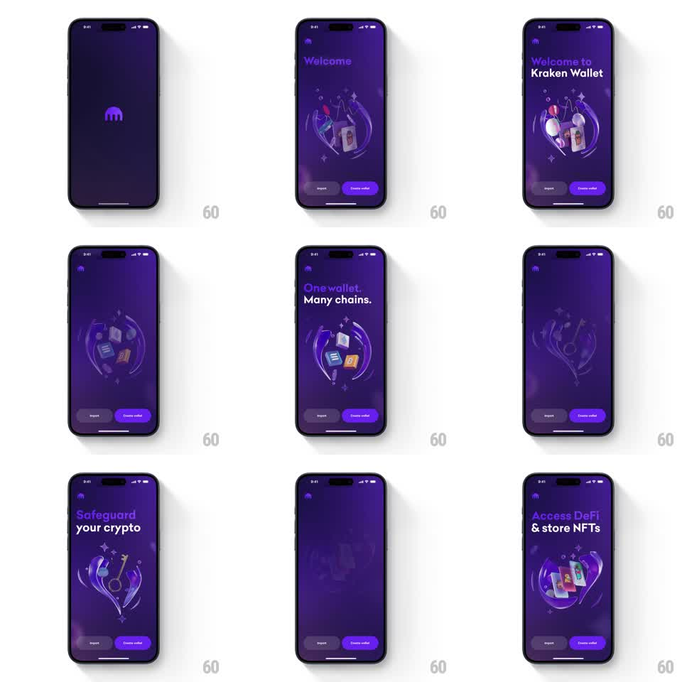

Media
Frame-by-frame

Rebuild this animation 1:1: Kraken Wallet's automated onboarding slideshow - value-prop headlines stagger in over morphing 3D glass illustrations ("One wallet. Many chains.", "Safeguard your crypto", "Access DeFi & store NFTs") on a deep purple field.

Rebuild this animation 1:1: Kraken Wallet's automated onboarding slideshow - value-prop headlines stagger in over morphing 3D glass illustrations ("One wallet. Many chains.", "Safeguard your crypto", "Access DeFi & store NFTs") on a deep purple field.
## Integration
Integration: stack-agnostic spec - springs given as stiffness/damping, timed motions as duration + curve; map every value to your framework and animation library of choice.
## Scene
Dark purple screens: Kraken mark top-left, a rotating glass-like 3D illustration (translucent torus ring with floating chain/token cards, key, NFT frames) center, headline top, Import + Create wallet buttons pinned bottom.
## Motion spec
Pattern: auto-advancing value-prop slideshow with morphing illustration.
- Welcome screen: logo draws in, then headline ("Welcome to Kraken Wallet") slides in word-by-word (each from 10px below, 250ms, 80ms apart) while the glass ring scales in from 0.7 (spring ~260/22, ~600ms).
- The ring rotates continuously (~25s per revolution) with floating cards bobbing on offset sine loops (±6px, 2-3s).
- Every ~3.5s the slide advances: headline words blur + rise out (300ms), the illustration crossfades to the next glass composition with a slight scale pulse (1 -> 1.04 -> 1, 500ms), and the new headline staggers in.
- Buttons stay fixed through all slides; only headline + illustration change.
## Calibration
- The illustration is translucent glass: backdrop blur + specular highlights must survive the crossfade.
- Auto-advance timing is even; no slide holds longer than others.
## Reduced motion
Slides crossfade; ring rotation stops.
## Don't miss
- First slide is the wordmark "Welcome" alone before the full headline lands.
- The two CTAs (Import ghost, Create wallet filled purple) never animate - they're the constant.